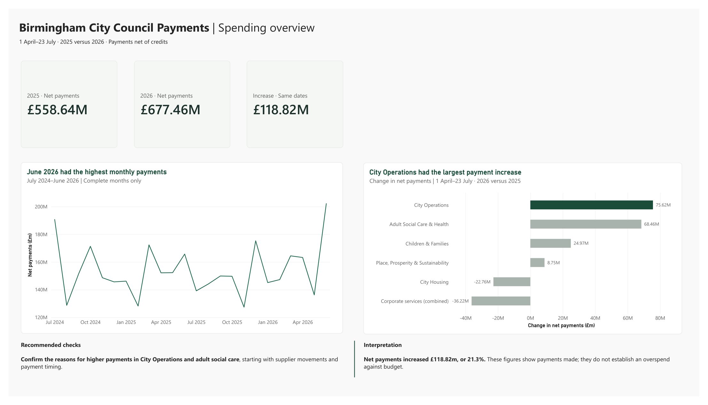

Birmingham City Council: 281 possible duplicate payments worth £4.45m and 213 redacted payments that can still be re-identified.
The question: Across 247,785 payments over £500 (£3.87bn from July 2024 to 23 July 2026), where are the immediate payment control risks and what is driving the 21% year-to-date spend increase (£677m vs £559m from 1 Apr to 23 Jul)?
What matters most: First, the YTD jump is heavily driven by Birmingham Highways PFI timing (£88m paid this year vs £21m last year, partly offset by a £12m credit), while 35% of FY2025/26 spend sits under a generic "PO accrual" label. Second, 260 suppliers appear under multiple accounts (such as "T C Training Ltd" and "T.C. Training Limited"), and 281 one-off payments (£1,000+) were paid twice within three days. Third, 7,681 redacted payments to individuals (£24.5m) still publish supplier numbers, and 12 of those numbers appear with names elsewhere in the file.
What I recommend:
- Accounts Payable: Check the 281 possible duplicate pairs against invoice references in the finance system, starting with the 73 same-day pairs, and merge the 260 duplicate supplier records.
- City Operations: Confirm the Birmingham Highways PFI payment schedule before reporting the YTD position.
- Information Governance: Stop publishing supplier numbers on redacted individual payments (all IDs are pseudonymised in my outputs).
Adult Social Care & Health is 28% of FY25/26 spend; top 10 suppliers receive 40% of outflow.
